How to add and update blog posts, projects and page content in the Payload admin
Admin address: https://www.visvas.in/admin
Applies to: Payload CMS 3 admin panel for www.visvas.in
Version: October 2026
Contents
1. Getting started
2. Images and files (Media library)
3. Blog posts
4. Projects
5. Project lookups
6. Website pages (Pages section)
7. Testimonials
8. Policy pages
9. Viewing enquiries
10. Things you can ignore
11. When will my change appear?
12. Troubleshooting
1. Getting started
1.1 Logging in
Open https://www.visvas.in/admin in Chrome, Edge or Safari.
Enter your editor email and password, then click Login.
You land on the Dashboard. It shows every content type as a card.
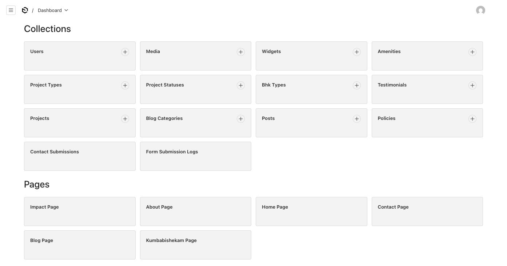
Figure: Dashboard. "Collections" hold lists of items (posts, projects). "Pages" hold the content of one fixed page each.
Note: Always edit on the live admin at www.visvas.in/admin. Do not use a local copy of the site for content changes.
1.2 Collections vs Pages
Collections are lists: you can create many items (Posts, Projects, Testimonials, Policies, Amenities…). Click a card to see the list, or the + on the card to create a new item.
Pages are single pages of the website (Home, About, Contact, Blog, Impact/Community). There is only one of each; you edit it, you never create a new one.
1.3 How saving works (read this first)
There are no drafts or version history. When you click Save, the change is live on the website. There is no undo, so copy long text somewhere safe before making big edits.
Blog posts are the exception: they have a Status field (Draft / Published / Archived). A post set to Draft is saved but hidden from the website.
Fields marked with a red asterisk (*) are required. Save will fail until they are filled.
The Save button is greyed out until you change something.
Warning: Some pages in the admin contain fields that the website does not currently use (for example most of the Home Page). Section 6 lists exactly which fields are used, so you do not spend time editing text that never appears.
1.4 Finding items in a list
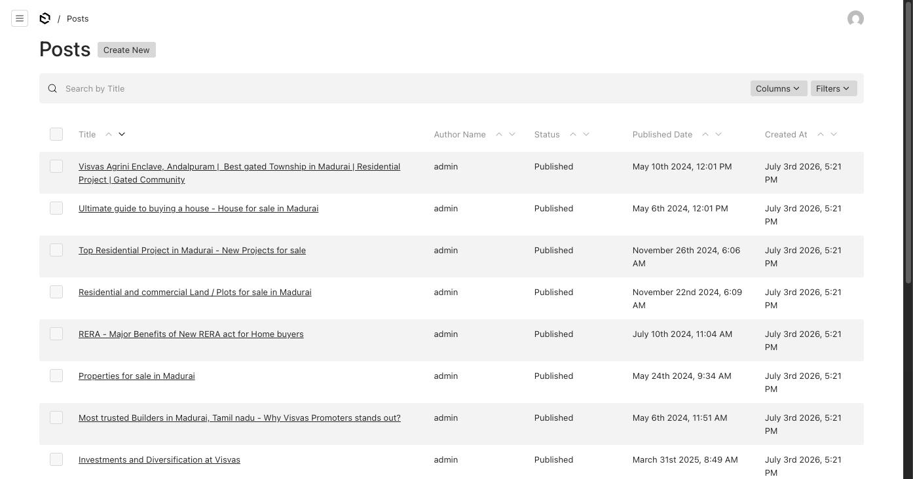
Figure: A collection list (Posts). Use "Search by Title", sort by clicking a column header, or use Filters.
Type in the search box to find an item by its title/name.
Click a column heading arrow to sort (e.g. newest Published Date first).
Columns lets you show/hide columns; Filters lets you show, for example, only Draft posts.
Click an underlined title to open it for editing.
2. Images and files (Media library)
Every image, PDF brochure and video lives in the Media collection. When a field asks for an image you can either upload a new file on the spot (Create New) or pick one that is already uploaded (Choose from existing).
2.1 Uploading a file
Dashboard → Media → Create New (or use Create New inside any image field).
Click Select a file, or drag the file onto the grey box.
Fill in Alt with a short description of the image (e.g. "Amita villa front elevation at dusk"). This helps Google and screen-reader users.
Click Save.
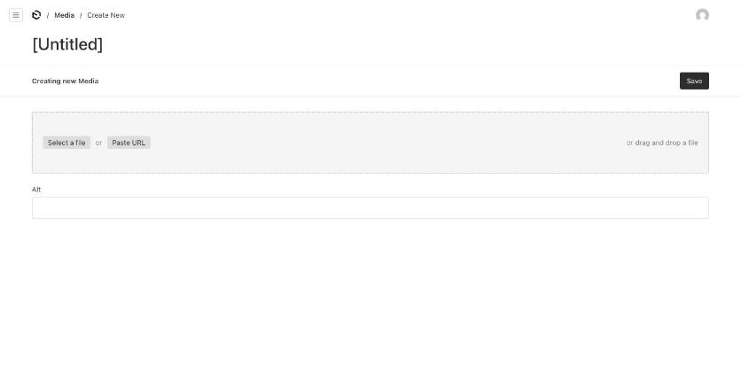
Figure: Uploading a new file to the Media library.
2.2 Image tips
Use .webp or .jpg for photos and keep each file under about 1 MB; large files slow the site.
Name files clearly before uploading, e.g. visvas-amita-elevation-3.webp. The file name becomes part of the image URL.
Use the recommended sizes printed under each image field (e.g. Project Listing Image 320×414px).
Warning: To change an image, upload a new file with a new name and select it. If you replace a file but keep the same name, visitors may keep seeing the old image for up to a day because of caching.
3. Blog posts
Blog posts appear on /blog (listing) and /blog/your-post-slug (the article). Changes appear on the website within a few seconds of saving.
3.1 Create a new blog post
Dashboard → Posts → Create New.
You will see three tabs at the top: Content, SEO and Schema. Start with Content.
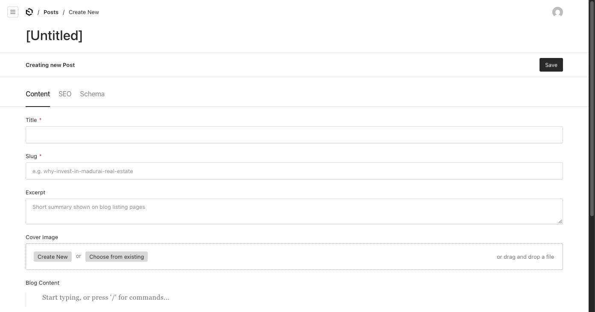
Figure: New post form, Content tab (top half).
Title (required): the headline of the post.
Slug (required): the web address of the post. Use lowercase words joined by hyphens, no spaces or symbols, e.g. why-invest-in-madurai-real-estate. The post will be at www.visvas.in/blog/why-invest-in-madurai-real-estate. Every post needs a different slug. It is not filled in automatically.
Excerpt: 1–2 sentence summary shown on the blog listing card. It is also used as the Google description if you leave the SEO Meta Description empty.
Cover Image: the main picture for the post (listing card and top of the article). Click Choose from existing or Create New to upload.
Blog Content: the article itself (see 3.2).
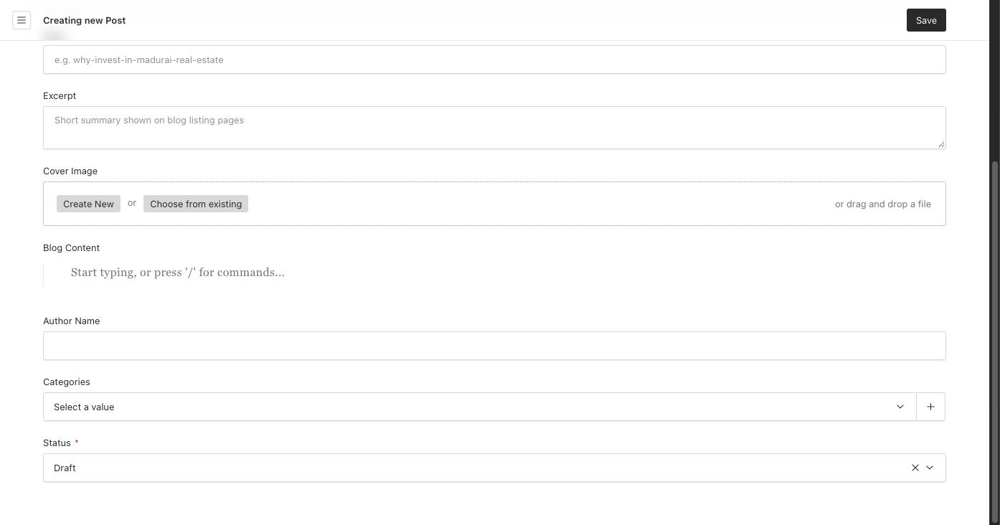
Figure: New post form, Content tab (bottom half): Author, Categories and Status.
Author Name: shown as "By …" on the article.
Categories: optional tags. (They are stored but not currently displayed on the website.)
Status (required): choose Draft while writing, Published to make it live, Archived to take it off the website without deleting it.
Published Date: appears only after you choose Published. Set the date you want shown on the article; the blog listing is sorted newest first by this date.
Optionally fill the SEO tab (3.3).
Click Save.
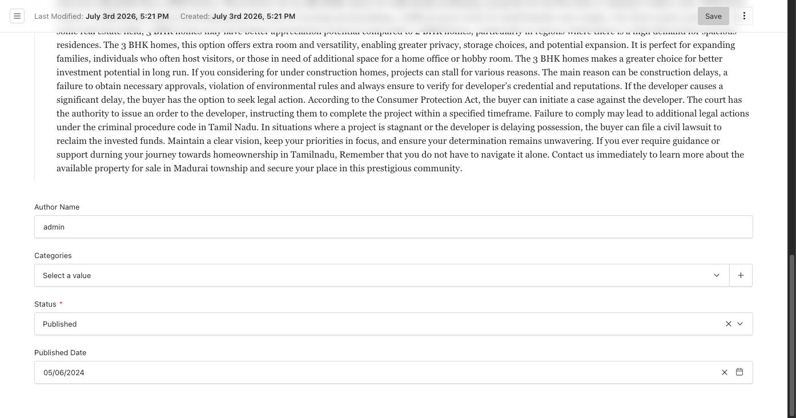
Figure: Status set to Published reveals the Published Date field.
Tip: Write and save the post as Draft first, check everything, then switch Status to Published and save again.
3.2 Using the content editor
Type normally. Press Enter for a new paragraph.
Type / at the start of a line to open the block menu: headings (H2, H3), bulleted/numbered lists, quote, image upload, table, horizontal line.
Select text to show the formatting bar: bold, italic, underline, link.
To add a link: select the words → click the link icon → paste the URL → confirm.
Use Heading 2 for main sections and Heading 3 for sub-sections. Do not use Heading 1; the post title is already the page heading.
Pasting from Word or Google Docs usually keeps headings and lists; check the result before saving.
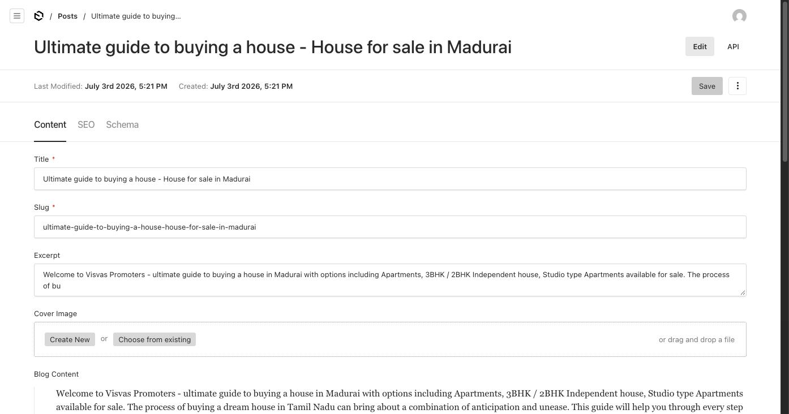
Figure: An existing post opened for editing. "Last Modified" shows when it was last saved.
3.3 SEO tab
All SEO fields are optional. If you leave them empty, the website builds sensible defaults from the title, excerpt and cover image.
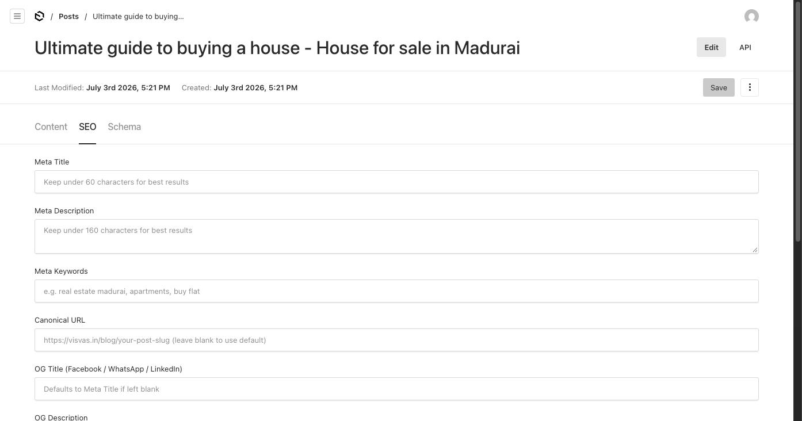
Figure: Post SEO tab (top).
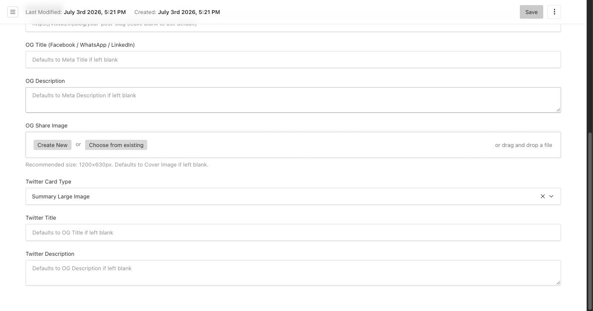
Figure: Post SEO tab (bottom): social sharing fields.
Field
What to enter
Shows on the website?
Meta Title
Title shown in Google results, under 60 characters. Empty = post title.
Yes (browser tab, Google)
Meta Description
Summary for Google, under 160 characters. Empty = Excerpt.
Yes (Google)
Meta Keywords
Not needed.
No, not used
Canonical URL
Leave empty unless told otherwise.
Yes (hidden tag)
OG Title / OG Description
Text shown when the link is shared on WhatsApp, Facebook, LinkedIn. Empty = Meta values.
Yes (link previews)
OG Share Image
1200×630px image for link previews. Empty = Cover Image.
Yes (link previews)
Twitter Card Type / Title / Description
Leave as default unless needed.
Yes (X/Twitter previews)
3.4 Schema tab
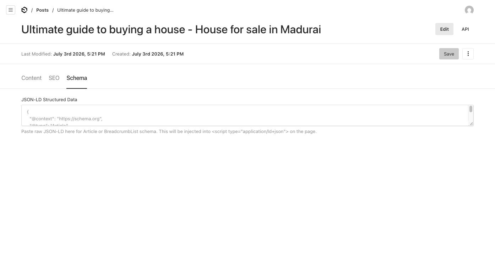
Figure: Schema tab: JSON-LD Structured Data.
Warning: Leave JSON-LD Structured Data empty unless an SEO specialist gives you the exact code. If this box contains invalid code (a missing comma or bracket), the post page can break. When empty, the site adds correct Article schema automatically.
3.5 Edit, unpublish, duplicate or delete a post
Edit: open the post from the Posts list, change fields, click Save.
Change the slug of a live post only if necessary: the old web address stops working, and any links shared earlier will break.
Unpublish: set Status to Draft or Archived and Save. The post disappears from the website within seconds.
Duplicate / Delete: use the ⋮ menu next to Save. Delete is permanent.
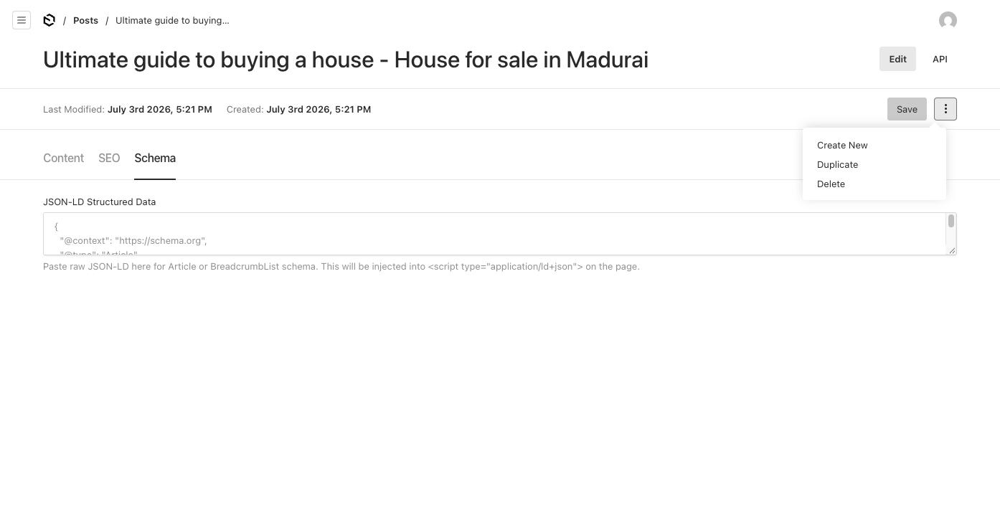
Figure: The ⋮ menu: Create New, Duplicate, Delete.
3.6 Blog categories
Dashboard → Blog Categories → Create New. Enter a Name and a Slug (lowercase-with-hyphens), then Save. Categories can then be picked on a post. They are not currently shown on the website.
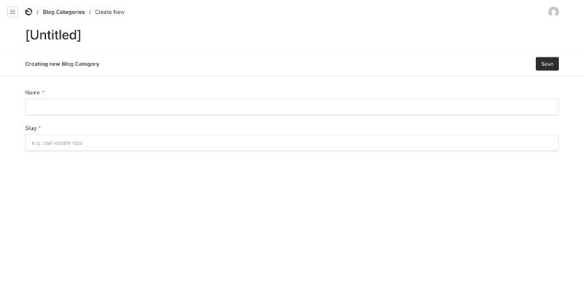
Figure: Creating a blog category.
3.7 Blog Page (listing page banner)
Pages → Blog Page controls the banner image at the top of www.visvas.in/blog.
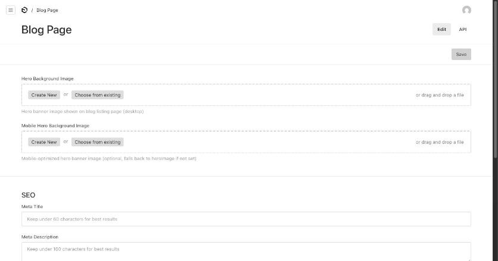
Figure: Blog Page: desktop and mobile hero images.
Field
What to enter
Shows on the website?
Hero Background Image
Wide banner image for desktop.
Yes
Mobile Hero Background Image
Optional taller image for phones. Empty = desktop image.
Yes
SEO (all fields)
—
No, the /blog page uses fixed SEO text
4. Projects
Projects appear on /projects, /projects/ongoing, /projects/completed, on each project page /projects/slug, on the Home page and in the footer. Every saved project is live immediately; there is no draft option.
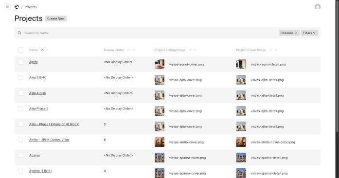
Figure: Projects list with Display Order and images.
4.1 Create or edit a project
Dashboard → Projects → Create New (or click an existing project name).
Work through the tabs from left to right: Basic Info, Description, Amenities, Location, Media, FAQ, SEO.
Click Save when done. You can switch tabs freely before saving; nothing is lost.
Area name, e.g. "Thuvariman". Also powers the Location filter.
Yes
Status
Pick one status (see 4.9). Decides whether the project shows under Ongoing or Completed.
Yes
Type of Project
Villa / Apartment / Plot etc. Used by the Type filter.
Yes (filter)
Slug
Web address. Leave empty and it is created from the Name (e.g. "amita"). Avoid changing it once live.
Yes (URL)
Display Order
Number. Lower numbers show first in lists and on the Home page. Same number → newest first.
Yes (ordering)
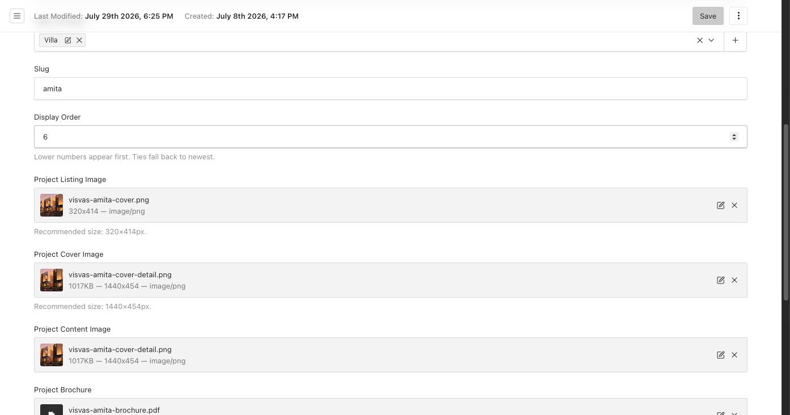
Figure: Basic Info: Display Order and the three project images.
Field
What to enter
Shows on the website?
Project Listing Image
Card image on project lists. 320×414px. Also used as the share image.
Yes
Project Cover Image
Wide banner at the top of the project page. 1440×454px.
Yes
Project Content Image
Image beside the description on the project page.
Yes
Project Brochure
Optional PDF users can download. Keep under ~20 MB if possible.
Yes (download button)
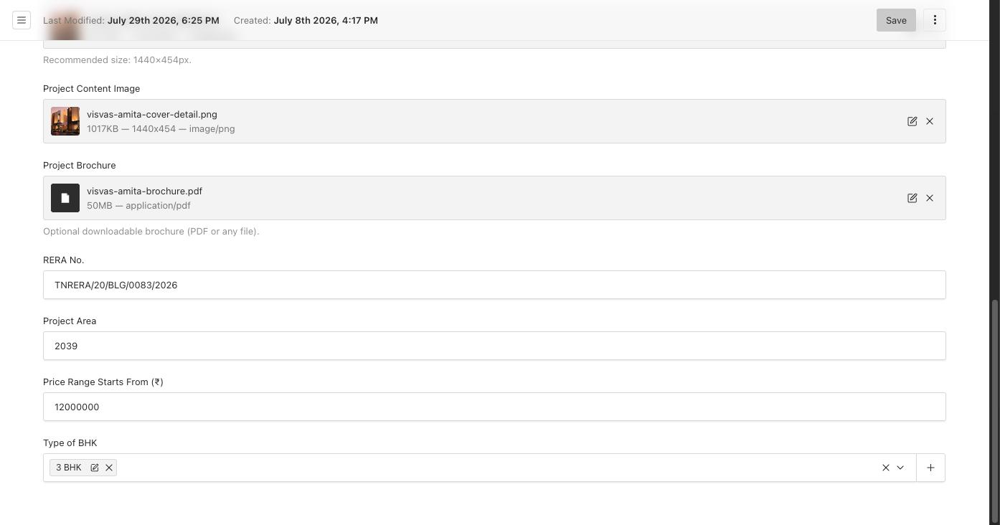
Figure: Basic Info (bottom): RERA, area, price and BHK types.
Field
What to enter
Shows on the website?
RERA No.
Registration number exactly as issued, e.g. TNRERA/20/BLG/0083/2026.
Yes
Project Area
Text with unit, e.g. "26,346.74 Sq. Ft.".
Yes
Price Range Starts From (₹)
Numbers only, no commas or ₹, e.g. 12000000. Used by budget filters.
Yes
Type of BHK
Pick one or more BHK types.
Yes
4.3 Description tab
The main "about this project" text. Uses the same editor as blog posts (headings, lists, bold, links).
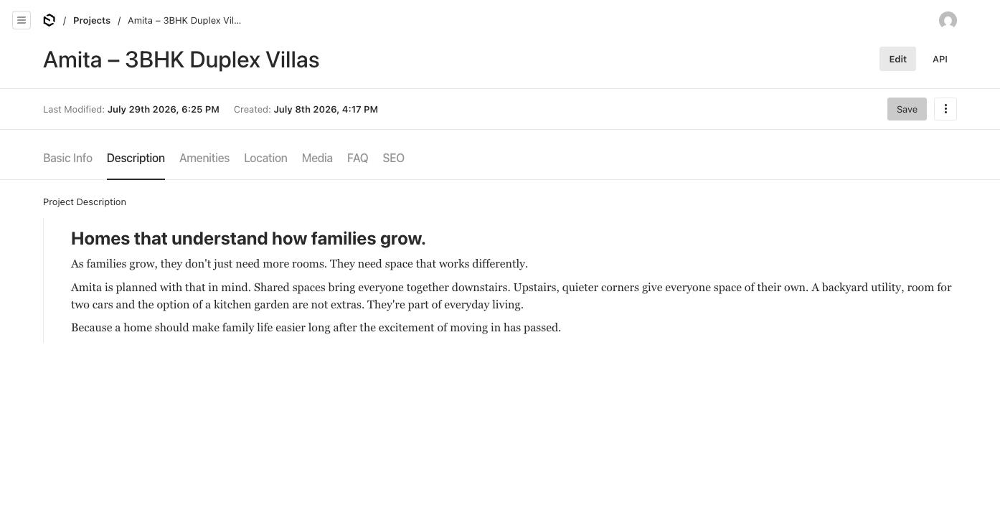
Figure: Description tab.
4.4 Amenities tab
Click the field and pick amenities from the list; click × on a chip to remove one. To add an amenity that does not exist yet, see 5.1. The Amenities section on the project page is hidden when none are selected.
Google Maps URL: open the place in Google Maps → Share → Copy link → paste.
Latitude / Longitude: in Google Maps right-click the exact spot; the first line shows the two numbers (e.g. 9.953777, 78.0548923). Paste the first into Latitude, the second into Longitude.
Key Nearby Locations: click Add Key Transport for each landmark. Fill Type (e.g. Bus Stop, School, Temple), Name and Distance (e.g. "~0.4 km"). Drag the ⠿ handle to reorder; use the ⋯ menu on a row to remove it.
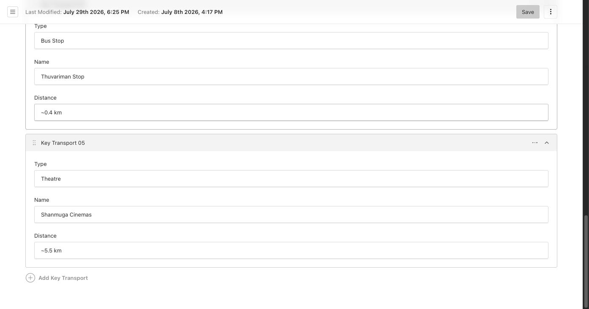
Figure: Key Nearby Locations rows and the Add button.
4.6 Media tab
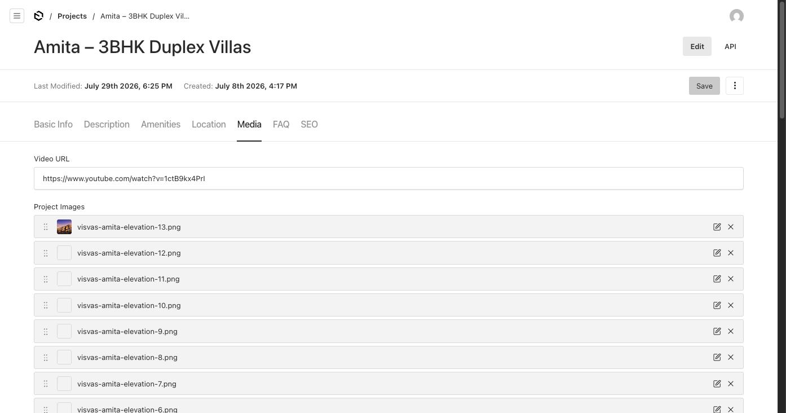
Figure: Media tab: Video URL and Project Images gallery.
Video URL: currently not shown on the website; you can leave it empty.
Project Images: the photo gallery. Add images, drag the ⠿ handle to change order, click × to remove.
Floor Plans: click Add Floor Plan for each plan. Upload the Plan image and fill Label (e.g. "West Facing – North Entry"), Bedrooms, Bathrooms, Size (with unit) and Price (₹).
Project Videos: click Add Video, upload a video file and add a caption.
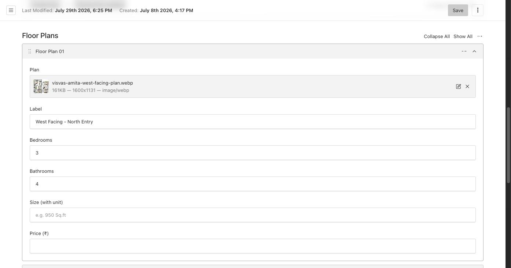
Figure: A floor plan row.
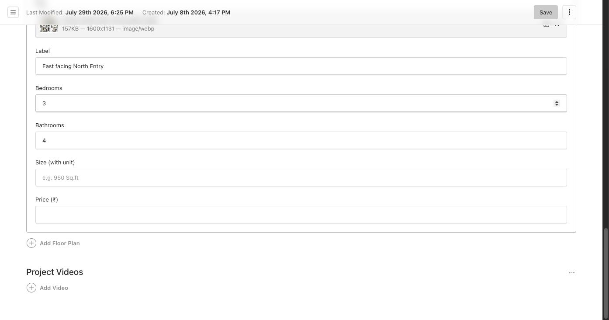
Figure: Add Floor Plan and Add Video buttons.
4.7 FAQ tab
Click Add Faq for each question, fill Question and Answer. Drag the ⠿ handle to reorder. FAQs appear at the bottom of the project page and also help Google show FAQ results.
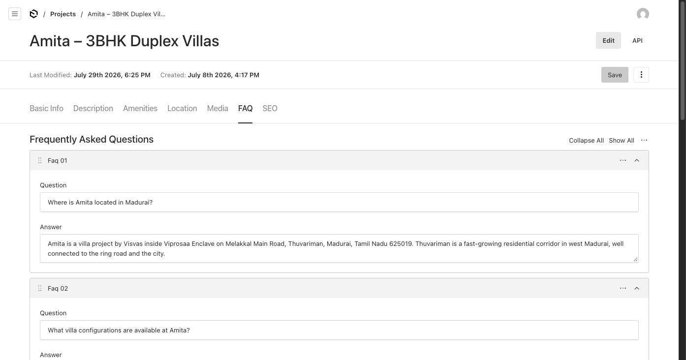
Figure: FAQ tab.
4.8 SEO tab
Same fields as blog posts (see 3.3). Empty fields fall back to the project name and Listing Image. At the bottom is JSON-LD Structured Data; the same warning applies: leave it empty unless you have valid code from an SEO specialist; a mistake can break the project page.
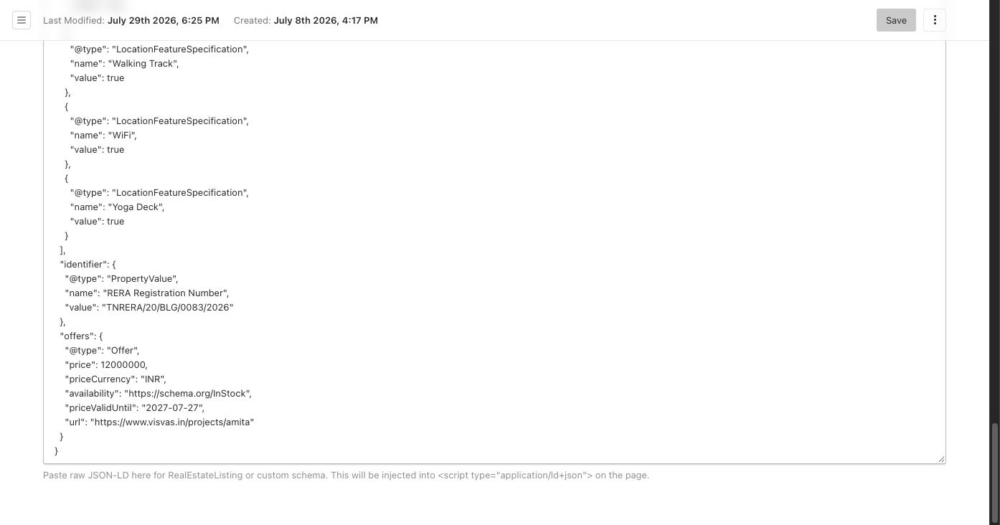
Figure: Project SEO tab, JSON-LD box.
4.9 Where will my project appear?
Status chosen
Appears on
Completed
/projects and /projects/completed; also the Home page "Completed Projects" section (first 3 by Display Order)
Any other status (On Sale, Under Construction, Ready to Move, Sold, Featured)
/projects and /projects/ongoing
No status
Only /projects (not on Ongoing or Completed). Always set a status.
Home page "Latest Projects": the 4 projects with the lowest Display Order.
Footer: the 6 most recently created projects.
The Ongoing Projects map on the Home page is fixed in the website code; ask the developer to change it.
Note: Project lists update within seconds of saving. The individual project page (/projects/slug) can take up to 1 hour to show edits.
5. Project lookups
These small lists feed the dropdowns used on projects.
5.1 Amenities
Dashboard → Amenities → Create New. Enter the Name (e.g. "Yoga Deck") and upload an Icon (SVG or small PNG). Save, then select it on projects.
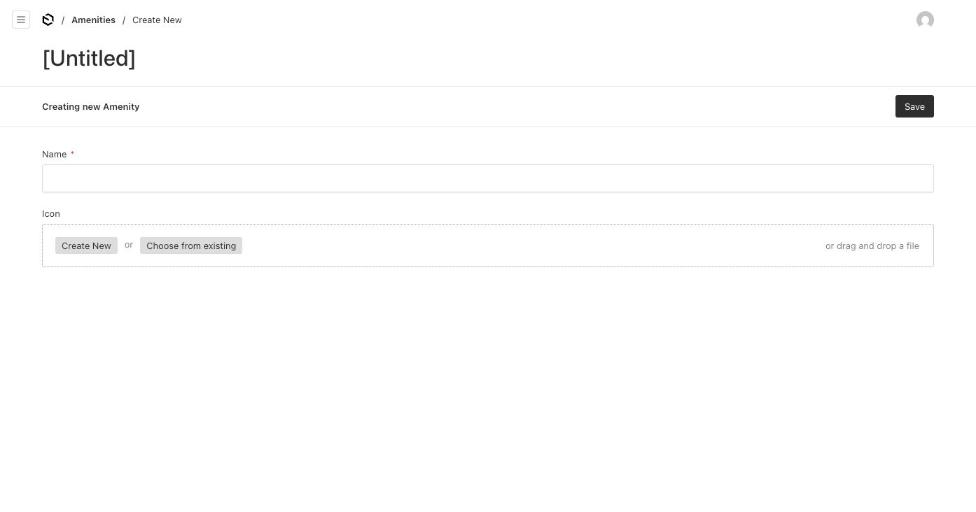
Figure: Creating an amenity.
5.2 Project Types and BHK Types
Same pattern: Name (shown to visitors) and Value (an internal key used in filter URLs). Leave Value empty and it is created from the name. Do not change the Value of an existing item.
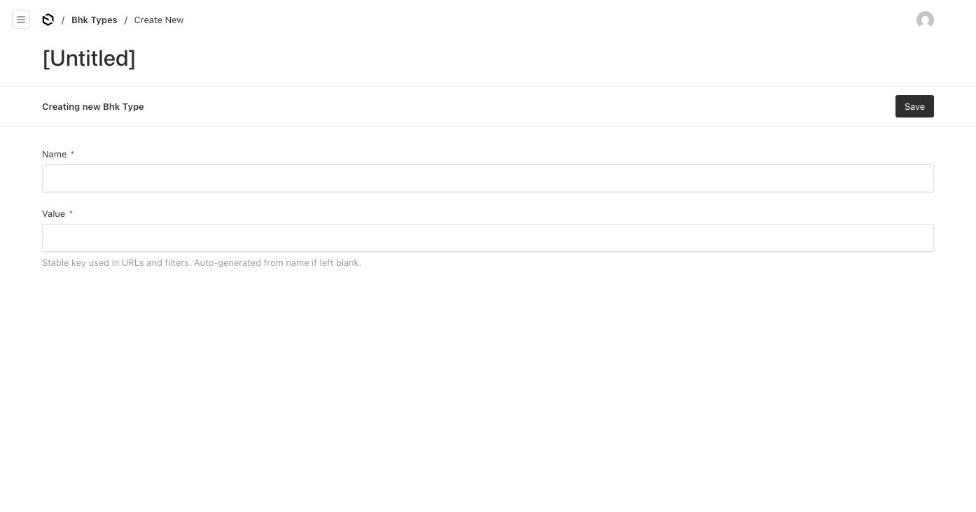
Figure: Creating a BHK type.
5.3 Project Statuses
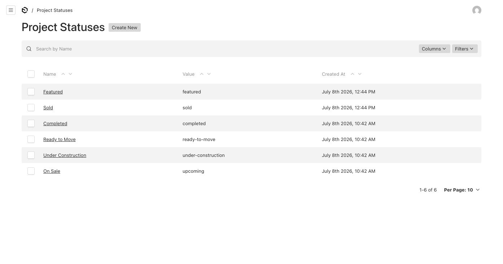
Figure: Project Statuses and their values.
Warning: Never rename or delete the status whose Value is completed. The Completed Projects page depends on that exact value. You may change the Name of other statuses freely.
6. Website pages (Pages section)
Each page below is edited from the Pages section of the dashboard. Because several sections of the site are built directly into the website design, not every field in the admin is used. The tables tell you which fields matter.
Note: Pages other than Contact and Blog can take up to 1 hour to show changes after saving.
Figure: Contact Page: hero images and Contact Details.
Field
What to enter
Shows on the website?
Hero Background Image / Mobile
—
No (banner is fixed)
Address *
Office address.
Yes, on /contact and in the footer of every page
Email *
Enquiry email address.
Yes, on /contact
Phone Number *
Main phone, e.g. +91 95432 24411.
Yes, header, footer, mobile call button, /contact
WhatsApp Number
Only if different from phone.
Yes, WhatsApp buttons
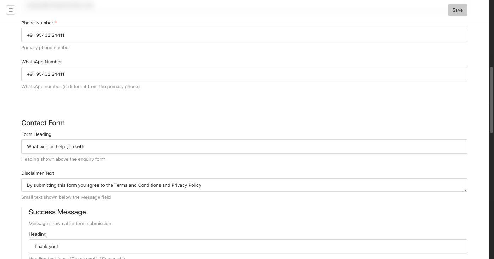
Figure: Contact Page: form heading, disclaimer and success message.
Field
What to enter
Shows on the website?
Form Heading
Heading above the enquiry form.
Yes
Disclaimer Text
Small print under the form. The exact words "Terms and Conditions" and "Privacy Policy" automatically become links.
Yes
Success Message → Heading / Message
Text shown after someone submits the form.
Yes
Success Message → Link
—
No (not currently displayed)
SEO fields
See 3.3.
Yes
Tip: Changing the phone number here updates the header, footer and mobile call button on every page within a minute or two.
6.2 About Page
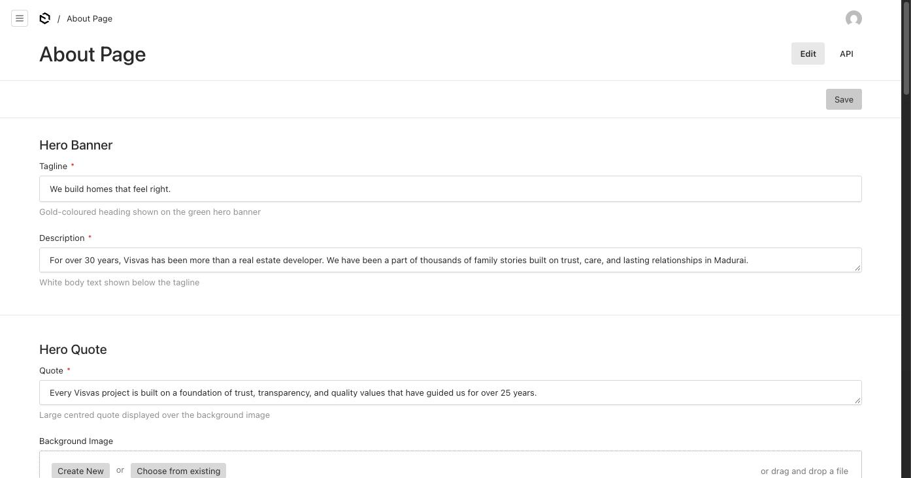
Figure: About Page: Hero Banner and Hero Quote.
Field
What to enter
Shows on the website?
Hero Banner → Tagline *
Large gold heading on the green banner.
Yes
Hero Banner → Description *
Paragraph under the tagline.
Yes
Hero Quote → Quote / Background Image
Required to save, but…
No (not displayed)
Intro Section → Heading / Text
"Who we are" heading and paragraph.
Yes
Stats (rows)
Number, Suffix (e.g. +), Label. Shown as the animated numbers row.
Yes
Our Values → Section Heading
—
No
Our Values → Side Image
Centre image of the values block.
Yes
Our Values → Values (rows)
Title + Description. 1st row shows left of the image, the rest on the right (e.g. Mission, Vision).
Yes
Founder Story → Name, Content, Photo
Founder section.
Yes
Founder Story → Heading
—
No
Testimonials fields
—
No (footer shows all testimonials)
SEO fields
See 3.3.
Yes
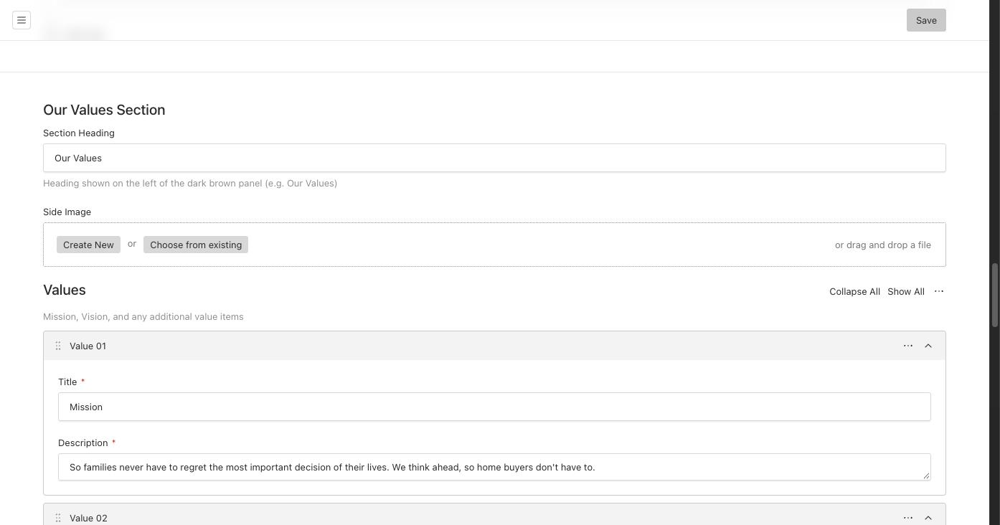
Figure: About Page: Our Values section with value rows.
6.3 Home Page
Most of the Home page (video banner, "Who we are", headings, ongoing projects map) is built into the website design and cannot be changed from the admin. Projects shown on the Home page come from the Projects collection (Display Order and Status, see 4.9).
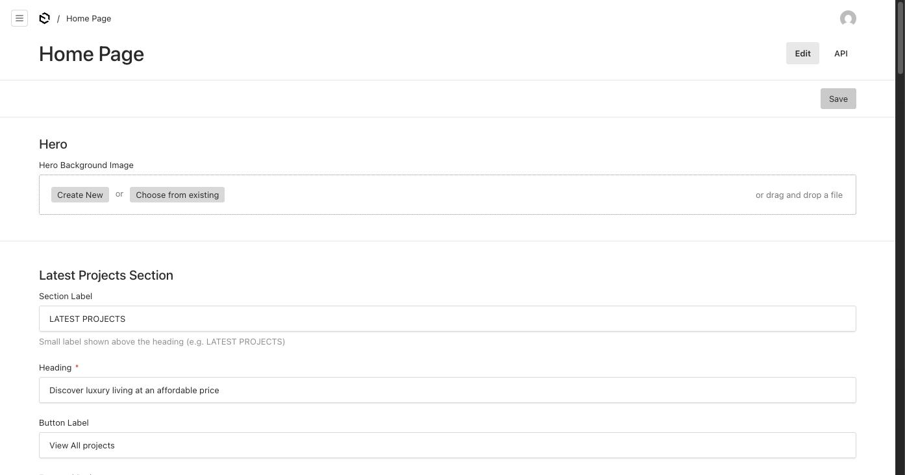
Figure: Home Page: the Hero and Latest Projects fields are not used by the website.
Field
What to enter
Shows on the website?
Hero, Latest Projects, Who We Are, Ongoing Projects Map, Our Commitment, Completed Projects, Testimonials sections
—
No
How We Build → Process Steps (Title, Description)
If you add steps, they replace the 3 default "How we build" cards. Icons and step numbers are not shown.
Yes (title & description only)
SEO fields
Google title/description and share preview for the home page.
Yes
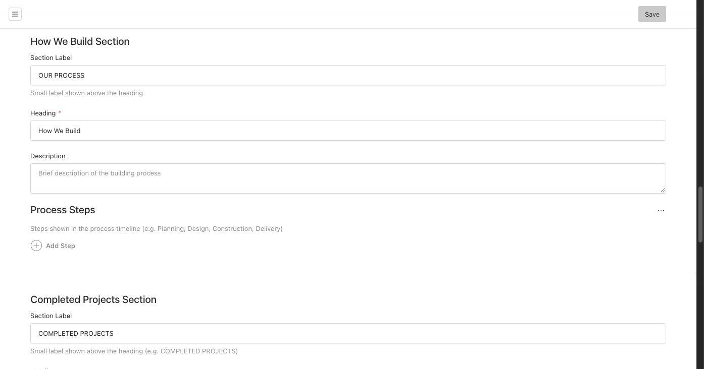
Figure: Home Page: How We Build Section and Process Steps.
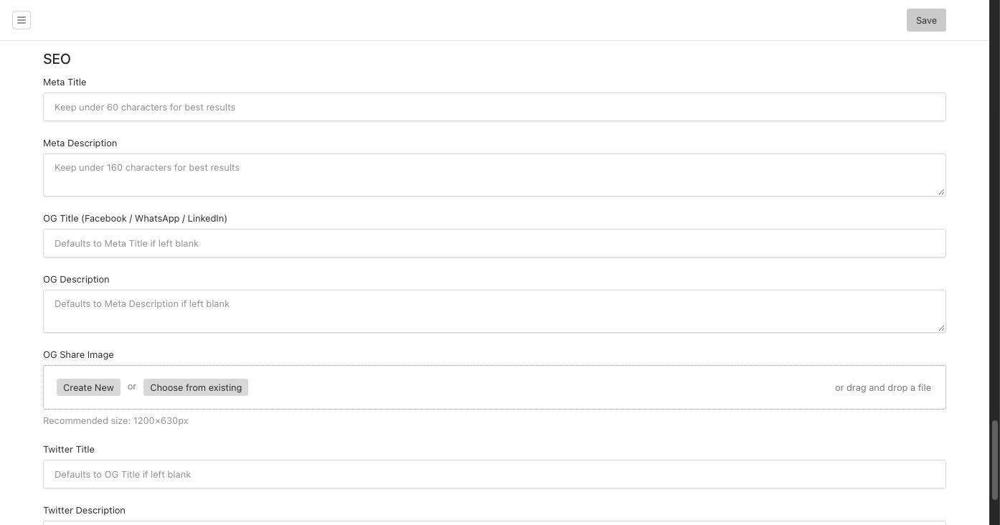
Figure: The SEO block at the bottom of each page (same on Home, About, Contact, Impact).
6.4 Impact Page (= the /community page)
The Impact Page in the admin controls the /community page of the website. Only its SEO fields are used; the visible text and videos on /community are fixed in the website design.
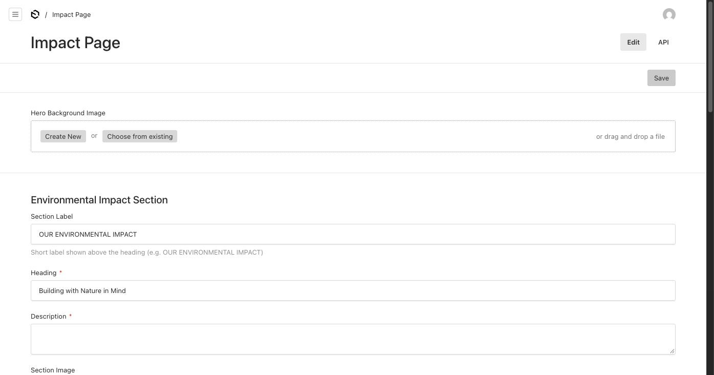
Figure: Impact Page: body fields are not displayed on /community.
Note: The Impact Page has required fields (e.g. Heading, Description). They must contain something for Save to work even though they are not displayed.
Note: The former Kumbabishekam page has been retired. The address /kumbabishekam now redirects to /about, and there is nothing to edit for it in the CMS.
7. Testimonials
Testimonials appear in the carousel in the footer of every page. All testimonials are shown. Changes appear within seconds.
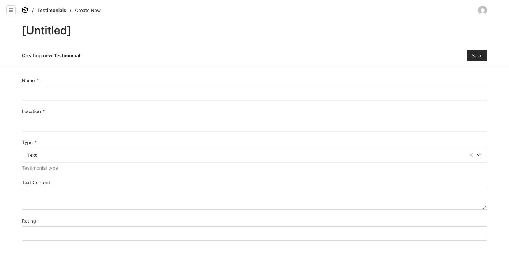
Figure: New testimonial (Text type).
Dashboard → Testimonials → Create New.
Fill Name and Location (e.g. "Madurai").
Choose Type: Text or Video.
For Text: write the quote in Text Content and give a Rating from 1 to 5 (half stars allowed, e.g. 4.5).
For Video: choose Video Source (Uploaded Video, YouTube or Vimeo), add a Poster image (the still shown before play), then upload the video or paste the YouTube/Vimeo link.
Click Save. To remove a testimonial, open it → ⋮ → Delete.
8. Policy pages (Privacy, Terms…)
Policies create pages such as /privacy-policy and /terms-and-conditions, and are linked from the footer.
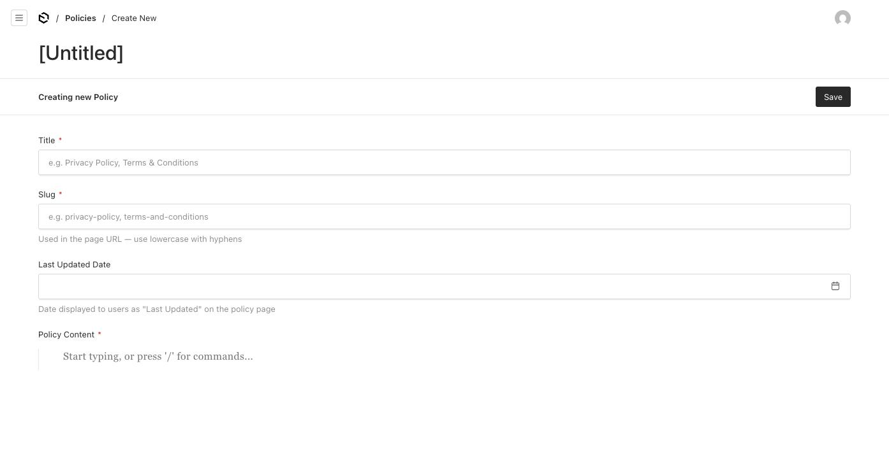
Figure: New policy form.
Dashboard → Policies → Create New (or open an existing policy).
Title, e.g. "Privacy Policy".
Slug: the page address, lowercase with hyphens, e.g. privacy-policy. Keep privacy-policy and terms-and-conditions unchanged; the contact form links to them.
Last Updated Date: shown to visitors as "Last Updated".
Policy Content: the full text, using the editor (headings, lists).
Click Save. The footer link updates within seconds; the page text within an hour.
9. Viewing enquiries
Contact Submissions: every enquiry/contact form sent from the website (name, phone, email, message, project). Open the collection to read them. They cannot be created or edited here.
Form Submission Logs: a technical log of each submission attempt and whether email, Google Sheets and Zoho CRM delivery succeeded. Useful if a lead seems to be missing.
Warning: Enquiries contain customers' personal details. Do not export, screenshot or share them outside the sales team.
10. Things you can ignore
Widgets collection: not used anywhere on the website.
Meta Keywords fields: not used.
Project → Video URL: not shown.
Users: only for adding admin logins (email + password). Every user can edit everything.
The Home and Impact page fields listed as "No" in Section 6.
Tip: After saving, open the page in a private/incognito window and refresh once or twice. The first visit after a save can still show the old version while the new one is prepared.
12. Troubleshooting
Problem
What to do
Save button does nothing / red error
Scroll the form for fields marked in red; fill every required (*) field. Check other tabs too.
"Value must be unique" on Slug
Another item already uses that slug. Add a word, e.g. -2026.
A page shows an error after I saved
Most likely invalid JSON-LD in the SEO/Schema box. Empty that box and Save; the page recovers.
My project is not on the Ongoing / Completed page
Check the project has a Status. Completed → status "Completed"; anything else → Ongoing.
Project is in the wrong position
Change Display Order (lower = earlier).
Blog post not visible
Status must be Published. Check the slug in the address.
Image did not change
Upload the new image with a different file name and select it; wait and refresh.
I edited Home page text but nothing changed
That section is fixed in the website design (see 6.3). Ask the developer.
Still not showing after 1 hour
Contact the website developer with the page URL and what you changed.